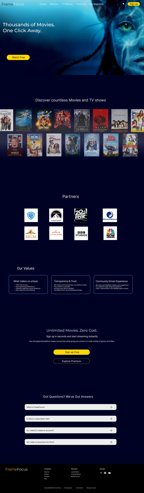

FrameFocus
Movie Streaming Platform
Overview
A mobile app concept designed to support meditation and mindfulness through a calm,intuitive, and visually soothing user experience.

This project explores the design of a movie streaming platform with a focus on clarity, usability, and visual engagement. The interface is built to help users easily discover and navigate through a wide range of content, including featured films, categories, and personalized recommendations.

The design uses a dark theme to enhance contrast and create a more immersive viewing experience. Content is organized through structured grids and horizontal scrolling sections, allowing users to browse efficiently without feeling overwhelmed.